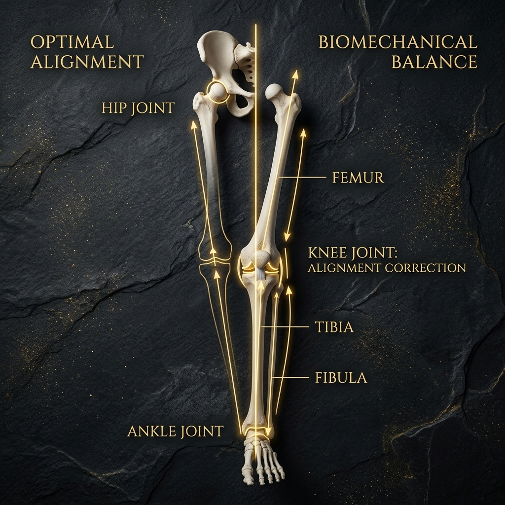
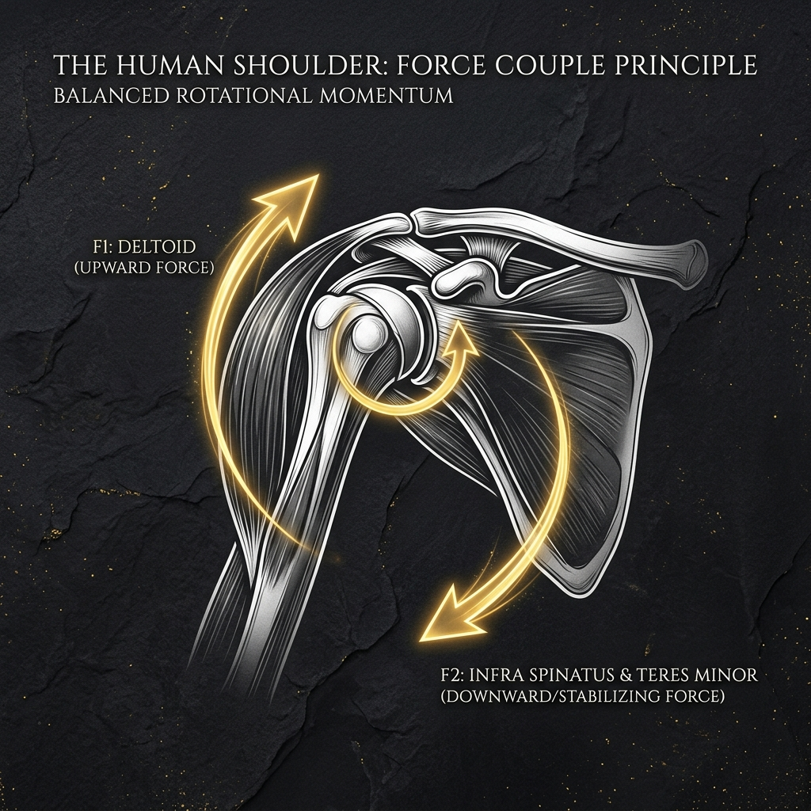
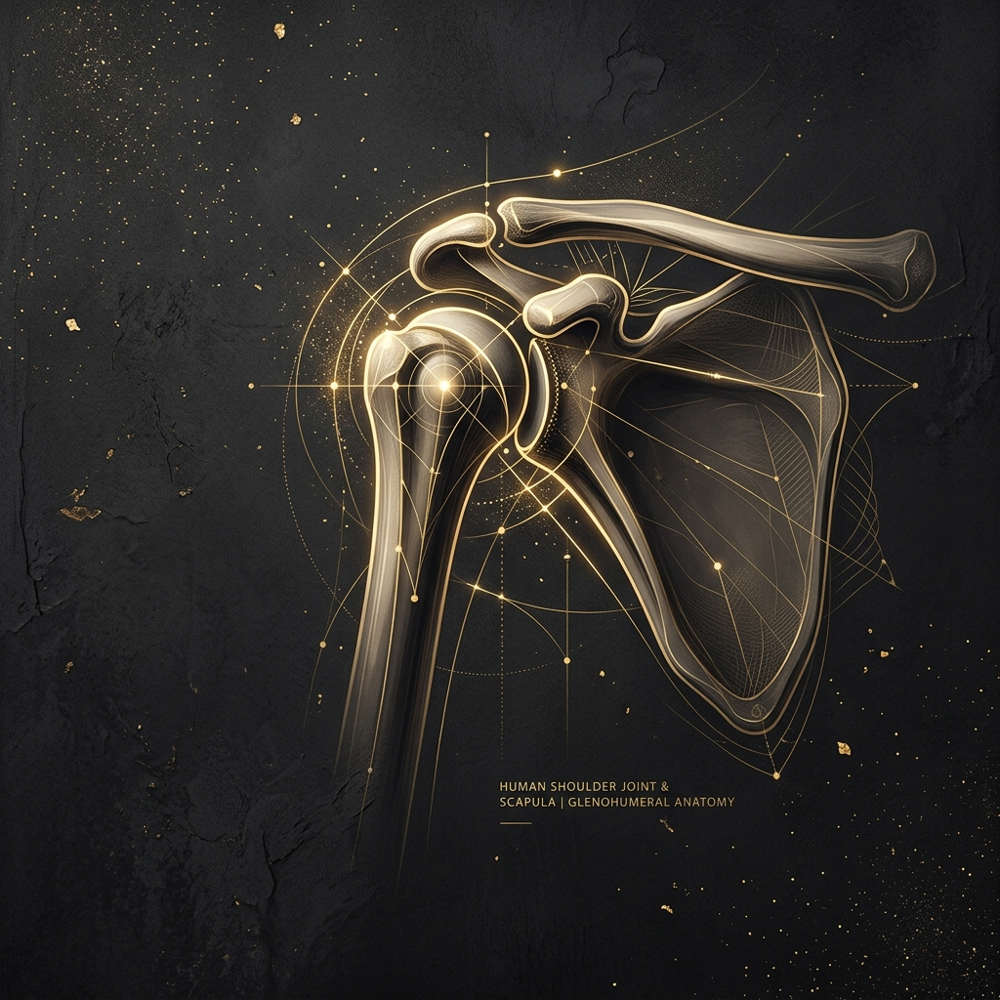
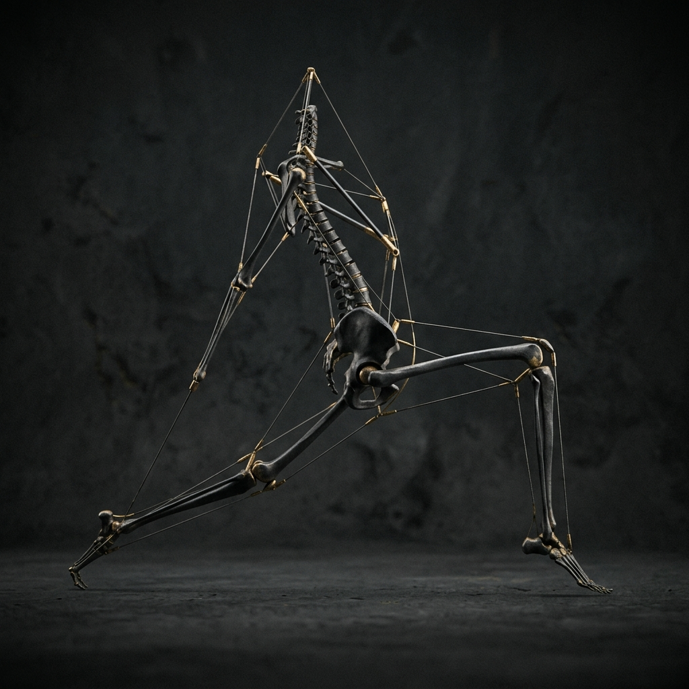

会員限定講義
O脚の改善 ― 「骨の変形」と「機能的な歪み」を分けて考える
「治らない」も「3回で真っ直ぐ」も誤り。O脚を構造性（骨）と機能性（股関節内旋・殿筋弱化・足部）に分け、原因・なりやすい人・鑑別評価・最善のアプローチ、そして神経適応から定着までの現実的な改善の時間軸まで、論文知見を交えてプロ向けに解説する。
2026年6月に公開された会員限定講義アーカイブです。構造学基本原理から呼吸・自律神経・睡眠・足病学まで全16講義を網羅。

「治らない」も「3回で真っ直ぐ」も誤り。O脚を構造性（骨）と機能性（股関節内旋・殿筋弱化・足部）に分け、原因・なりやすい人・鑑別評価・最善のアプローチ、そして神経適応から定着までの現実的な改善の時間軸まで、論文知見を交えてプロ向けに解説する。

身体の動きは単独の筋ではなく、向きの違う筋の協働＝フォースカップルで生まれる。肩甲骨上方回旋・腱板・骨盤・体幹の主要カップルと、その破綻が生む痛み・代償、そして「緩める→働かせる→組ませる→使わせる」の再建アプローチをプロ向けに解説する。

睡眠は休息ではなく能動的な回復作業だ。生理学・脳科学（グリンパティックシステム）・東洋医学の複数観点から、なぜ大事か、β-アミロイドなど脳のゴミの洗浄、レム/ノンレムの理想リズム、質を上げる方法、臨床での評価・指導まで解説する。

痛む肩関節だけを見ても改善しない。鍵は肩甲骨という土台だ。現場で頻出する①肩甲胸郭関節の離開による不安定型と、②肩甲挙筋による下方回旋型の2パターンを軸に、時期の見極め・評価・パターン別アプローチ・セルフケアまでプロ向けに解説する。

「自律神経を整える」は気合いではできない。解剖・生理・ポリヴェーガル理論・東洋医学の複数観点から自律神経を解き明かし、調整の方法と、調整が成り立つための5つの"条件"、評価・アプローチ・セルフケアまで解説する。

「骨が小さくなる」は本当か。小顔のメカニズムを事実・理論・仮説のレベルに分け、むくみ・咀嚼筋・頭蓋・姿勢・舌位の複数観点からプロ向けに解説。骨性か筋性かの見極め、出口（首）から整える評価・アプローチ・セルフケアまでまとめる。
口や舌を見ても治らない口呼吸がある。足底感覚のバグ→距骨のズレ→バランス低下→上行性運動連鎖→前方頭位→低位舌→口呼吸。足病学・神経学・構造学を統合し、足から呼吸を変えるアプローチを解説する。

手は全身の骨の4分の1が集まり、脳の広大な領域とつながる「第二の脳」だ。複数観点から手の重要性を読み解き、機能低下の影響、味覚・口腔機能との関係、上肢帯との関係、評価・アプローチ・セルフケアまで解説する。
鼻は加湿・濾過・NO産生・自律神経調整を兼ねた呼吸器、口は本来"食べる"器官だ。複数観点から両者の影響を読み解き、なぜ鼻呼吸ができないのか、利点とデメリット、評価・アプローチ・セルフケアまで解説する。

1日2万回の呼吸が崩れていれば、その負債は全身に積み上がる。横隔膜とIAP、自律神経の視点から本来のメカニズムを解き明かし、なぜ浅くなるのか、「たくさん吸う」が間違いな理由、現場のアプローチとセルフケアまで解説する。

手技を集めても結果が出ないのは、身体を読む土台が抜けているから。テンセグリティ、運動連鎖、荷重伝達の視点から、"手技を当てる人"を"原因から組み立てる人"へ変える構造の見方を徹底解説する。

揉んでも治らない肩こりの本当の原因は、肩甲骨という不安定な土台の上で頚部を守ろうとする防御反応だった。現代社会の背景、固い筋と弱い筋を見抜く評価、土台を作るアプローチと対策まで解説する。

上半身と下半身をつなぐ"要石"、仙腸関節。そのわずかなズレは腰・股関節・全身の出力にまで波及する。診るポイント、クラスターで判断する評価法、いつ・どんなお客様にアプローチするかまで解説する。
腰も膝も肩も、身体は地面の上に積み上がった建築物だ。土台である足が傾けば、その上のすべてが代償する。足病学とは何か、学ぶと現場がどう変わるのか、トレーナー・セラピストが道具なしで診るべきポイントまで解説する。

「ほぐしても戻る肩」の正体は、単なる硬化ではない。表層のゲル化と深層のうっ滞性ゾル化という二層構造を解き明かし、触り分ける評価から施術の順番、ゾル化しやすい人の見極めまで、臨床に活きる思考を徹底解説する。

押圧（圧をかける）という行為は多用されるが、「なぜ押した後に緩むのか」を本質から即答できる人は少ない。感覚センサーであるゴルジ腱器官、チクソトロピー、自律神経の三層からその真実に迫る。